Instructivo Control y Reproceso de tablas UMTS¶
1. OBJETIVO¶
El presente documento busca explicar y detallar el control y reproceso de datos para las plataformas 3G (UMTS), para mantener la consistencia de datos de manera diaria
2. DEFINICIONES¶
- FD: Fecha desde, en formato DD.MM.YYYY
- FH: Fecha hasta, en formato DD.MM.YYYY
- HD: Hora desde, en formato HH24
- HH: Hora hasta, en formato HH24
- Smart: Base de datos Oracle donde se encuentran las tablas de datos para la red de acceso, incluido UMTS
- Perdido: Servidor UNIX en donde se importan los XML desde el proveedor, y en donde se encuentra Smart. Dirección de acceso: perdido.claro.amx
- RC: Regional Cluster, también mencionado como OSSRC.
3. INSTRUCCIONES OPERATIVAS¶
Para realizar este instructivo, se requiere acceso por SSH a Perdido, y el programa PL/SQL Developer con acceso a Smart.
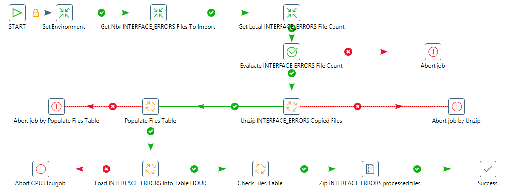- Ingresar al programa PL/SQL Developer –>Ingresar Username
- –> Ingresa Password


Aquí se referenciarán las consultas presentes en los scripts:
- Control 1 UMTS.sql
- Control 2 UMTS.sql
- Control 3 UMTS.sql
Procedimiento Controles Hour:¶
- Se controla las tablas de counters raw de las diferentes plataformas, que se insertan los datos desde los puntos csv.all que se extraen desde los .xml. Estas tablas son las primeras tablas que traen los datos crudos desde el proceso parser. Los datos que aquí no se encuentren pueden ser por problemas de origen (es decir, desde el RC se generaron mal o no) o problemas en el proceso de parsing. Se muestra sólo la primera técnica de reproceso, pero para mayores problemas referenciarse al documento de Troubleshooting proceso parser.doc
a. Control 1 UMTS.sql¶
Se ejecuta la consulta Control 1 UMTS.sql.
 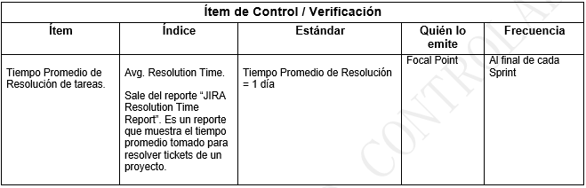
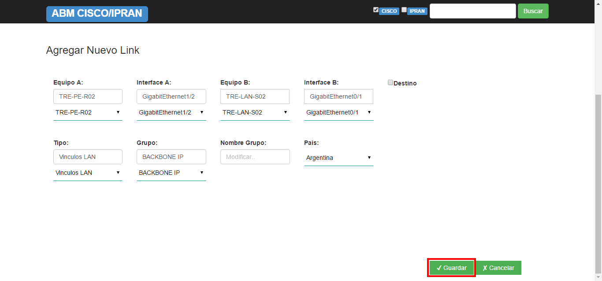
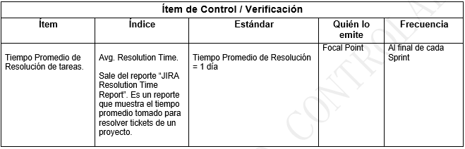
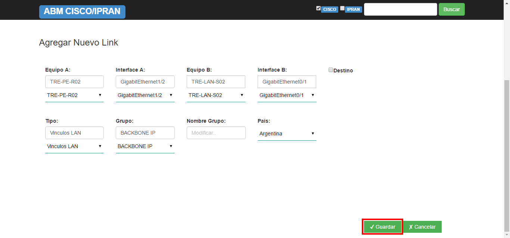


La misma recibe los siguientes parámetros:
- &OSSRC: Regional Cluster, cuyos valores válidos son OSSRC1, OSSRC2, OSSRC3
- &1 : Fecha Desde, en formato DD.MM.YYYY (ej: 29.12.2015)
- &2 : Fecha Hasta, en formato DD.MM.YYYY (ej: 29.12.2015)
Ingresar:
- Región (OSSRC): Existen 3 tipos de regiones (OSSRC1, OSSRC2, OSSRC3)
- Fecha desde
- Fecha hasta

La busqueda a traves de las variables ingresadas muestra como resultado:

En caso de faltante de datos, verificar si se encuentran los XML, y si estos ya han sido procesados o no. Para ello, se debe ejecutar la siguiente consulta, en donde deberemos ajustar el FILENAME según el RC que nos interese, y la fecha/hora que nos importe:
 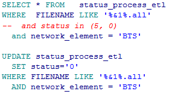
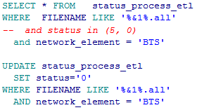
Los valores en Status pueden ser tres posibles:
- 0: Sin procesar, con lo cual está en cola de espera para ser procesado
- 1: Procesado
- 5: En procesamiento, con lo cual ese archivo está tratándose para insertar los datos a la BD.
Nótese que hay 13 elementos, que corresponden a las 13 mediciones diferentes, para el RC seleccionado, en la hora seleccionada.
En caso de que necesitar reprocesar lo único que se debe hacer el dejar el archivo en estado PENDIENTE. Para ello ejecutar la siguiente sentencia, siempre ajustando el valor del RC y de la fecha/hora:

Luego presiona commit –> Yes
b. Control 2 UMTS.sql.¶
Aquí se revisan las tablas hour, pero del denominado “modelo nuevo de UMTS”, el cual consiste en un conjunto de tablas maestro/detalle, separadas por medición, y agrupadas en tablas de celda (WCELL) y demás elementos (NE). Este modelo carga sus datos mediante un sistema de colas de procesamiento.
Las mediciones que se utilizan son: • Service • HO (Handover)
La siguiente consulta se utiliza para Service pero en formato se aplica de la misma manera para HO.
La consulta recibe los siguientes parámetros: • &1 : Fecha Desde, en formato DD.MM.YYYY (ej: 29.12.2015) • &2 : Fecha Hasta, en formato DD.MM.YYYY (ej: 29.12.2015)
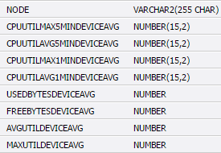


Debe Ingresar:
- Fecha Desde
- Fecha Hasta
La Busqueda a traves de las variables ingresadas muestra como resultado:

Si tenemos diferencias o faltantes pero tenemos datos en dichas horas en las tablas raw, debemos ingresar manualmente “nuevos pedidos de procesamiento” en las colas. Para ello, tenemos un script que permite generar la llamada a esos pedidos. Existen 8 scripts que hay correr, dependiendo de la clase de tabla que falte:
SERVICE
- Para tablas detalle wcell: umtsDetailServiceWcellHour_EnqInRec.sql
- Para tablas master wcell: umtsMasterServiceWcellHour_EnqInRec.sql
- Para tablas detalle ne: umtsDetailServiceWbtsHour_EnqInRec.sql
- Para tablas master ne: umtsMasterServiceWbtsHour_EnqInRec.sql
HO:
- Para tablas detalle wcell: umtsDetailHoWcellHour_EnqInRec.sql
- Para tablas master wcell: umtsMasterHoWcellHour_EnqInRec.sql
- Para tablas detalle ne: umtsDetailHoWbtsHour_EnqInRec.sql
- Para tablas master ne: umtsMasterHoWbtsHour_EnqInRec.sql
De ahí que, en dicho script, se comente/descomente la línea de DBMS_OUTPUT, para lograr la salida deseada, para la tabla que necesitamos. En general, siempre procesar primero tablas detail wcell, luego master master wcell, y luego ídem con tablas NE.
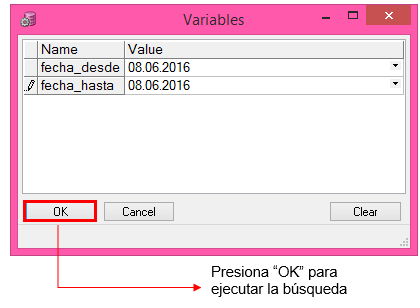Este script genera la siguiente salida:
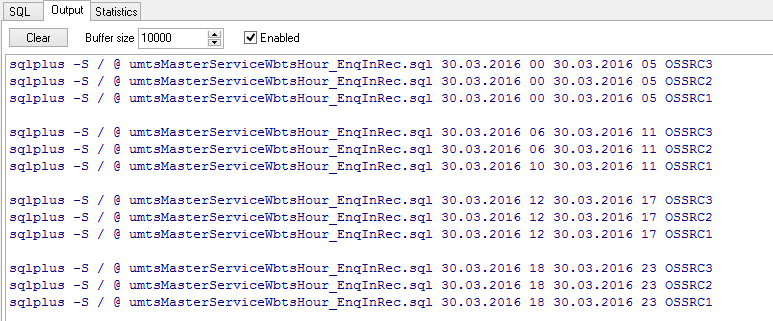Copiamos estos comandos, y los debemos ejecutar en Perdido, en la ruta /calidad/nokia/umts/aq/hourly/enqueue.
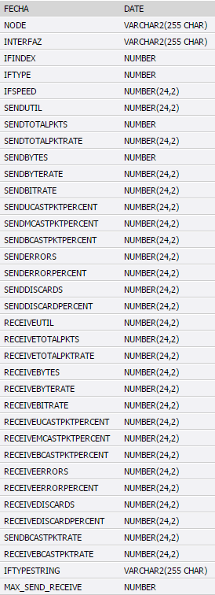Luego presiona –> Open

En dicha ruta existen a modo de ejemplo los siguientes scripts, los cuales pueden servir de referencia
Luego, se deben controlar el estado de dichas colas, para ello ejecutar las consultas:
SERVICE:
- ReportUmtsNsnHourlyServiceDetailNe.sql
- ReportUmtsNsnHourlyServiceDetailWcell.sql
- ReportUmtsNsnHourlyServiceMasterNe.sql
- ReportUmtsNsnHourlyServiceMasterWcell.sql
HO:
- ReportUmtsNsnHourlyHoDetailNe.sql
- ReportUmtsNsnHourlyHoDetailWcell.sql
- ReportUmtsNsnHourlyHoMasterNe.sql
- ReportUmtsNsnHourlyHoMasterWcell.sql
A modo ejemplo ejecutamos la siguiente consulta: ReportUmtsNsnHourlyServiceDetailWcell.sql


2. Procedimiento Controles Daily/Busy Hour – Controles Semanales:¶
1. Se controla las tablas del modelo viejo de UMTS a nivel day. Para ello corremos la consulta CheckDailyUMTS.sql La misma recibe los siguientes parámetros:
- &1 : Fecha Desde, en formato DD.MM.YYYY (ej: 29.12.2015)
- &2 : Fecha Hasta, en formato DD.MM.YYYY (ej: 29.12.2015)

[No adjuntamos la consulta dado que es muy extensa y se utiliza ocasionalmente].

Reprocesamos cuando hemos reprocesado a nivel hour y llevamos más de 3 días de retraso, ya que por default en Perdido hay una tarea sincronizada que corre todos los días la carga de datos de tablas day de las últimas 72 hs.
Para reprocesar debemos ir a la carpeta /calidad/nokia/umts/daily/, y ejecutar los siguientes scripts:
- Tablas day: nokia_umts_day_rec.sh
- Tablas busy hour (BH): nokia_umts_bh_rec.sh
Estos scripts reciben 3 parámetros:
- $1 : Fecha Desde, en formato DD.MM.YYYY
- $2 : Fecha Hasta, en formato DD.MM.YYYY
- $3: Medición, que puede ser: ho, service, hsdpa, macd ó noc.

El script nos da como resultado:
Si se han recuperado tablas a nivel day/bh, es necesario reprocesar los tableros diarios ejecutando los scripts ubicados en:
- /calidad/tablero/minutos/tablero_minutos.sh
- /calidad/tablero/geometria/daily/geometriaIndicadores.
- /calidad/tablero/radar/daily/umtsCldd_RadarIndicador.sh
- /calidad/tablero/nqi/daily/nqi_day_ins.sh
Si se han recuperado tablas a nivel day/bh correspondientes a la semana anterior, es necesario reprocesar las tablas semanales y los tableros semanales.
Para reprocesar tablas semanales nos situamos en la carpeta /calidad/nokia/umts/summary/, donde ejecutamos el siguiente script:
- nokia_umts_week.sh.
El cual no recibe parámetros y calcula automáticamente la semana anterior a la fecha del dia. Este script carga las tablas de isabh week y de day week.
Para reprocesar los tableros semanales ejecutar los siguientes scripts:
- /calidad/tablero/region/tablero_region_week.sh
- /calidad/tablero/minutos/tablero_minutos_week.sh
- /calidad/tablero/umts/tablero_umts_week.sh
- /calidad/tablero/indicators/analisis_indicadores.sh
- /calidad/tablero/dashboard/dashboard_week.sh
- /calidad/tablero/gestion/tablero_alarm_gestion_week.sh
- /calidad/tablero/taskforce/tablero_taskfoce.sh
- /calidad/tablero/radar/summary/umtsClddRadarIndicadorDayW.sh
- /calidad/tablero/iur/tablero_iur.sh
- /calidad/tablero/geometria/summary/geometriaIndicadoresWeekly.sh
- /calidad/tablero/nqi/summary/tablero_nqi_week.sh
Si se han recuperado tablas a nivel day/bh del mes anterior, es necesario reprocesar DAY_MONTH y todos los tableros mensuales.
Reinserción de tablas UMTS¶
Este proceso es semiautomático y se deben realizar los siguientes pasos para reinsertar datos:
1° Para construir el set de datos primero se debe ejecutar la query:
2° Ejecutar la query del constructor:
constructorCallConstructorProcedureReInsert_Umts
Nos muestra como resultado:

3° Se debe tomar el resultado que nos muestra en la pestaña “Output” para crear el bloque PL/SQL anónimo, ejecutar el bloque PL/SQL anónimo:
En el bloque PL/SQL define los siguientes parámetros:
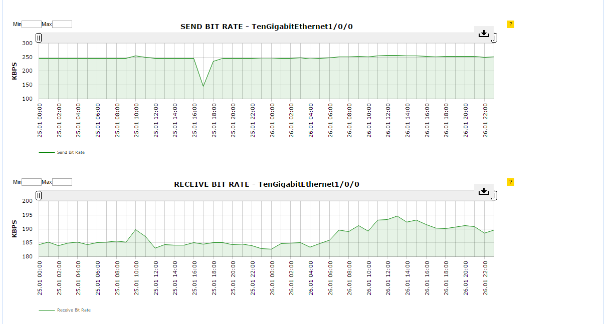Al finalizar los pasos detallados anteriormente los datos son reinsertados con éxito.